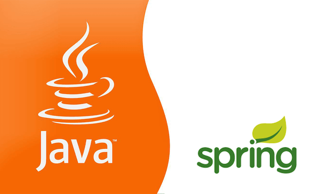

Unity Systems & Startup Ventures
Bridging Advanced Computational Intelligence & Scalable Enterprise Software
Unity Systems is my technology startup and entrepreneurial venture dedicated to developing intelligent data architectures, high-impact community platforms, and mission-critical software solutions. My industry career as a software engineer and consultant across multinational telecom operators, state government portals, and technology corporations (including Arkansas.gov / NIC Inc., WeDo Technologies, Orange Telecom / Mobinil, Xpress Integration, Maroc Telecom, Tunisie Telecom, Ericsson Egypt, Vodafone, and Hanna Instruments) provides the rigorous engineering foundation for our software ventures.
Unity Systems | أنظمة الوحدة | High-Performance Software Storefront
Unity Systems packages peer-reviewed algorithms and industrial software engineering into decoupled, production-ready libraries across the AI & Scientific Compute Lifecycle. Built on a Fair-Code Dual-Licensing Model, our components are freely accessible ($0) under AGPLv3 / MIT for academic research and open-source projects, and commercially licensed per developer seat, compute node, or compiled binary (with custom Enterprise MSAs) for proprietary, closed-source enterprise deployments.
Curation, Drift & Spatial Telemetry
Local dataset curation, Parquet lineage versioning, and real-time distribution drift tracking via AILifecycleKit (pip install ailifecyclekit), alongside high-precision visual gaze telemetry arrays via EyeArt Engine.
Neuro-Symbolic & Graph Engines
Structural protein-protein interaction (PPI) forecasting via hierarchical N-gram Graph Convolutional Networks (ProtGram-DirectGCN) and unsupervised modularity-optimized graph entity resolution (ModER-GraphER).
Inspect Engines & CodeGPU Compute & VR Rendering
Ultra-low-latency C++/CUDA/OpenGL engines for stereoscopic VR and CAVE shader raymarching (RaymarcherVR Engine), multi-million particle GPU physics (CudaParticles Engine), and 3D cross-linked proteomics visual analytics (XLPM-VisIntX Suite).
Inspect Binaries & CodeXLPM & VisInt-X: End-to-End Tandem MS/MS Curation & Multi-Scale 3D Structural Proteomics
Demonstrates how Unity Systems transforms heavily processed mass-spectrometry datasets (curated via a 15-table MySQL relational schema and Perl algorithmic scoring engine across 5 ppm precursor / 0.8 Da b/y ion tolerances and 14N/15N isotopic shifts) into a zero-install, 3-level D3.js matrix/treemap synchronized with a 3Dmol.js WebGL dual-protein structure viewer. Pre-loaded with 6 curated protein complex benchmarks (Rim1 Homodimer, Rim1 Tetramer, Rim1–Pif1 Helicase, 14N/15N Isotopic Complex, BSA C-Score, and Target-Decoy FDR Control).
Unity Consultancy
Our consultancy arm provides comprehensive services across the software lifecycle. We specialize in robust, scalable solutions and strategic project execution.
- Core Services: Data Storage, Data Analytics & AI, Software Engineering, Full-Stack Solutions, Project Management.
- Key Projects: The Dallas Muslim News.
- Funding Strategy: Supported by Endowments and Zakat funding models.
- Team: Founded by Dr. Islam Akef Ebeid. Core Volunteers include Noor Atiyah.
Pharma AI & Network Biology Solutions
Delivering enterprise-ready, secure AI systems for drug discovery. We build heterogeneous graph embeddings (PrimeKG, Hetionet) while rigorously addressing pharmaceutical intellectual property risks.
- Differential Privacy: DP-SGD and node-perturbation techniques neutralize membership inference attacks and protect proprietary targets.
- Graph Sanitization: Automated anomaly detection against graph poisoning in public databases (STRING, BioGRID).
- Confidential Computing: Secure inference enclaves (AMD SEV-SNP/Intel SGX) ensure zero-knowledge environments for sensitive repurposing models.
Enterprise Systems & Consulting Portfolio
Industrial projects engineered across telecommunications, BSS/EAI platforms, government services, and enterprise software.
Information Network of Arkansas (INA)
Software Developer • Arkansas.gov / NIC Inc.
Architected and maintained mission-critical citizen web services, high-throughput backend data pipelines, and transactional payment gateways powering the official Arkansas State Government portal (Arkansas.gov).
Handled high-security state agency integrations, resolving complex relational database discrepancies, optimizing transactional query throughput, and engineering secure RESTful endpoints for digital public sector applications serving millions of constituents.

Smart Promotion Tool (“Smart Promo” / SPT)
Xpress Integration (Professional Services) • Client: Maroc Telecom
Designed and engineered the “Smart Promo” (SPT) promotion engine to streamline business tasks and minimize time-to-market for new promotional campaigns at Maroc Telecom, overcoming the functional limitations of standard BSCS promotion tools through a flexible, end-to-end solution for defining and managing promotions across eligible subscriber contracts.
4-Stage Core Engine Workflow:
- Define Promotion: Configure campaign rules via
PromoWizerd.mxml,RateplanSettings.mxml, andPackAndEngagment.mxml. - Evaluate Contracts/Customers: Filter subscriber contracts against selection & incompatibility criteria (
EvaluationServices.mxml,SubscriberSettingsCanvas.mxml,IncompatibilityManagement.mxml). - Apply Promotion Mechanism: Execute cascading discounts and application server rules (
DiscountForCascade.mxml,ApplicationServSettings.mxml). - Assign Rewards: Automatically assign promotions, free units, or Mobile Internet (MI) promotions to eligible contracts/customers.
3-Tier Architecture: (1) Online Adobe Flex UI (com.xpress.spt.ui.promo.mxml), (2) Backend CXF/Spring Web Services Server, and (3) Java Batch Application invoking PL/SQL packages.
Contract Layout Printing Suite (Impression Contrat Client)
Xpress Integration (Professional Services) • Client: Tunisie Telecom
Engineered from scratch to resolve the lack of contract printing in standard BSCS Customer Care CX for Tunisie Telecom, enabling agents to retrieve, inspect, and print official bilingual (French/Arabic) subscriber contracts directly from CX terminals.
Integrated BSCS Customer Care CX Workflow:
- Search for the subscriber contract in BSCS Customer Care CX (Contract Overview) and click the embedded “Afficher Contrat Client” link.
- Enter the contract code (
Numéro du contrat) in the lookup portal and click “Recherche”. - Review the populated bilingual Contrat de vente ligne GSM Post payée (Information Client / بيانات الحريف, Adresse de facturation, and Informations Contrat / بيانات العقد) and click “Imprimer Contrat”.
“BSCS iX R2” Migrated Billing System — UAT
Xpress Integration (Professional Services) • Client: Tunisia Telecom
Provided Tunisia Telecom with high-precision User Acceptance Testing (UAT), enabling the operator to pinpoint system vulnerabilities and billing edge cases during the migration to BSCS iX R2. Led testing on the Customer Care CX web application as the core component of the migrated billing platform.
Time To Market Enhancement Tool
Xpress Integration (Professional Services) • Client: Ericsson Egypt
Engineered a specialized Java application for BSCS iX non-kernel modules to assure full compatibility with the BSCS billing environment—replacing the cumbersome manual operation of the MP, MI, BS, and Roaming modules in BSCS.

WeDo Technologies — RAID Revenue Assurance
Delivery Consultant II • Department: Delivery Team
Handled client-site deployment and configuration for Revenue Assurance Systems (RAID) across major telecom operators.
RAID Training & Integration Project: Engineered a suite of web services providing integration functionalities between subscriber Billing and multimedia/RBT frameworks alongside comprehensive technical training modules.

Orange Telecom (Mobinil / France Telecom Egypt) — EAI Middleware Suite
Software Developer • Department: Technology Development – EAI (Enterprise Application Integration)
Role: Developing customized middleware services to connect core telecom billing, charging, CRM, and multimedia modules
RBT (Ring Back Tone) Framework Integration Layer
Role: DeveloperA set of enterprise web services providing bidirectional integration functionalities between the subscriber Billing system and the Ring Back Tone (RBT) provisioning framework.
Tools: webMethods Integration Platform • Java
Rate Plan Instant Migration Handler
Role: DeveloperReal-time middleware integrating Billing and Intelligent Network (IN) Charging systems to execute instant rate plan changes and automatically dispatch confirmation SMS messages to subscribers.
Tools: webMethods Integration Platform • Java
CRM Offer Assignment Tool Integration
Role: DeveloperMiddleware bridge integrating the Customer Relationship Management (CRM) system with core Billing and Rating engines for automated commercial offer assignment.
Tools: webMethods Integration Platform • Java
webMethods 8 Migration
Role: TesterPlatform-wide upgrade and regression verification of mission-critical flow services migrating from webMethods 6.5 to webMethods 8.
Tools: webMethods Integration Platform (v6.5 → v8.0)

Vodafone Egypt — Team Portal Time Sheets
Web Developer Intern • Department: IT – Professional Services
Designed and deployed an internal web application enabling engineering and IT-Professional Services teams to upload, track, and audit employee timesheets on the internal corporate team portal using Microsoft Visual Studio (C#).
Xpress Integration Portal & Hanna Instruments
Interactive Corporate Web & Precision Instrumentation
Xpress Integration Corporate Portal: Designed and authored an interactive corporate web presence using Adobe Flash Builder / Flex showcasing telecom consulting offerings and BSS case studies.
Hanna Instruments (Technical Maintenance & Customer Engineering): Performed hardware maintenance and calibration of chemical instruments measuring temperature and pH values, diagnosing customer instrumentation issues and delivering repaired laboratory units.
Independent Applications, Startup Ventures & Applied Systems
Proprietary Software Systems, OLAP Business Intelligence, Web Platforms & Embedded/Visual Systems
The Dallas Muslim News
Community-focused publishing and cultural engagement platform serving the Muslim community across Greater Dallas-Fort Worth.

TakolEih: Cairo Restaurant Guide

Online restaurant guide for Cairo City providing comprehensive district-by-district restaurant profiles, menus, cuisine categories, and interactive search.

Human Resources Management System (Smart-HRM)
Full-featured JSP/Servlet web application deployed on Apache Tomcat to manage corporate employee information, organizational records, and personnel rosters.

Pet Store Retail Analysis (OLAP & BI)
Online Analytical Processing (OLAP) business intelligence project analyzing multi-dimensional retail operations and sales cubes using Microsoft SQL Server 2012 and Microsoft Data Tools 2012.

Jupiter Inventory System
MVC-architected database management system designed for small and medium business inventory tracking and stock auditing.
Genesis GUI & ICAS Connected Vehicles
Genesis (ATU M.Sc., 3.92 GPA): Java/JavaFX GUI animating data structures & algorithms. ICAS (Ain Shams B.Sc., Grade ‘A’ Project): Java client-server + GPS/microcontroller traffic collision avoidance system.
Industry Career Journey
Software Developer
Arkansas.gov / National Information Consortium Inc. (NIC), Little Rock, AR
Developed and maintained mission-critical web applications, citizen portals, and payment gateway backends for the State of Arkansas.
Delivery Consultant II (Department: Delivery Team)
WeDo Technologies, Cairo, Egypt
Handled client-site deployment for Revenue Assurance Systems (RAID) and developed Java/webMethods integration services and technical training modules.
Software Developer (Department: Technology Development – EAI)
Orange Telecom (Mobinil / France Telecom Egypt), Cairo, Egypt
Developed customized Enterprise Application Integration (EAI) services on the webMethods platform and Java across the RBT Framework Integration Layer, Rate Plan Instant Migration Handler, CRM Offer Assignment Tool Integration, and webMethods 6.5 to 8 migration.
Software Developer (Department: Professional Services)
Xpress Integration, Cairo, Egypt
Developed customized applications for telecom BSS platforms, delivering the Smart Promotion Tool (Maroc Telecom), Contract Layout Printing Suite (Tunisie Telecom), BSCS iX R2 Migrated Billing UAT (Tunisie Telecom), and Time To Market Enhancement Tool (Ericsson Egypt).
Web Developer Intern (IT – Professional Services) & Engineering Intern
Vodafone Egypt, Hanna Instruments & Giza Systems, Cairo, Egypt
Built the internal Team Portal Time Sheets web application in Visual Studio C# at Vodafone Egypt, performed temperature/pH analytical instrument maintenance and client diagnostics at Hanna Instruments, and trained in enterprise database administration at Giza Systems.
Industry & Professional Experience
Key engineering, telecom, and enterprise roles across corporate industry leaders.
Little Rock, AR • State citizen portals & payment backends
Cairo, Egypt • Telecom BSS, Maroc Telecom, Tunisie Telecom, Ericsson
Cairo, Egypt • Database administration, web portals & calibration
Companies & Organizations Worked For / Consulted With
A global network of technology leaders, telecom operators, and state agencies.
Professional Engineering Certifications
Fundamentals of Engineering (FE)
NCEES Accredited Engineering Examination
Rigorous national examination covering fundamental engineering sciences, computational principles, and ethics.
ITIL Foundation Certificate
IT Service Management (ITSM)
Certified in IT service lifecycle frameworks, continual service improvement, incident governance, and enterprise delivery standards.
Job Search & Career Resources
Recommended portals for technical roles, freelance contracts, and academic opportunities.